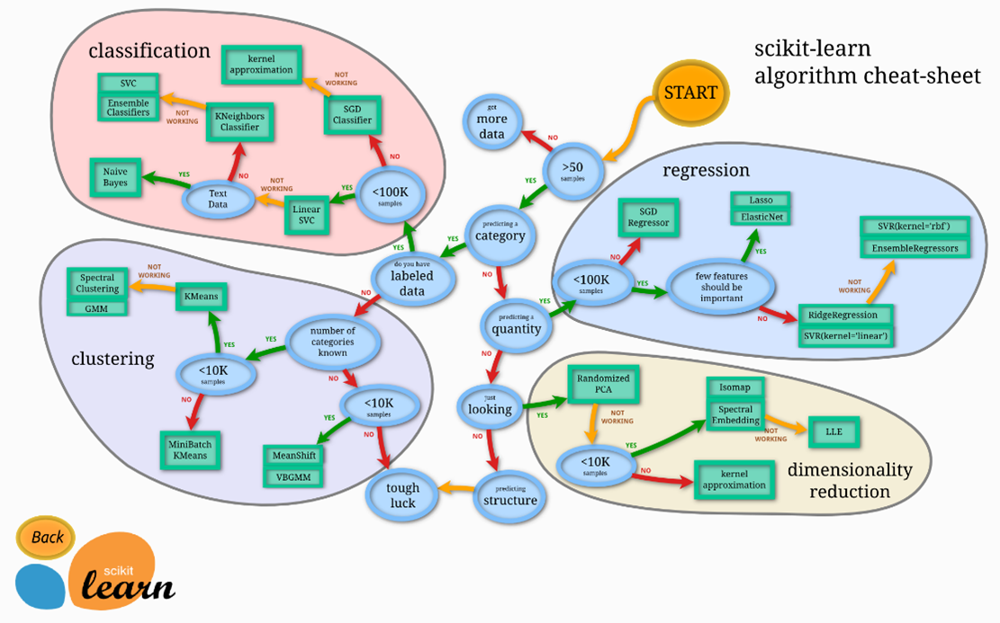

Proposition de recherche
Description du sujet de recherche :
En se basant sur une stratégie de courtage du Forex, l'intelligence artificielle déterminera s'il faudra acheter à la hausse ou à la baisse une devise ainsi que l'objectif de gain et de perte estimé. L'intelligence artificielle prendra position automatiquement sur une devise. Un résumé des opérations réalisées sera affiché dans un Dashboard.
Objectif général :
Négocier un indice du Forex avec une stratégie en utilisant l'apprentissage automatisé pour accroître les gains.
Objectifs spécifiques :
Acquisition de connaissances (Trading)
Notre thème principal est le trading de la bourse. La bourse comprend plusieurs marchés comme les actions (une part d’une entreprise), le Forex (les devises) et les matières premières.
Nous avons choisi le Forex car c’est le marché dans lequel les entreprises de courtage chargent le moins pour une transaction d’achat ou de vente.
Le Forex est un marché dans lequel nous échangeons une devise par une autre à des taux de change qui varient en permanence. Nous avons choisi USD/CAD, c’est-à-dire combien vaut 1 dollar USD contre 1 dollar CAN.
Dans l’exemple ci-dessous, nous observons que le 31 octobre 2020 que 1$US = 1.333$CAN, mais que le prix fluctue dans le temps.
Notre but est d’acheter quand l’indice est au plus bas et revendre quand l’indice est au plus haut.
Pour savoir quand acheter ou vendre, un trader utilise plusieurs outils en même temps :
Nous allons utiliser l’outil Indicateur pour notre projet.
Il existe beaucoup d’indicateurs comme :

Moyennes mobiles :
Nous avons choisi d’utiliser les moyennes mobiles, qui représentent la moyenne des X derniers prix de clôture sur un intervalle de temps. Nous avons choisi la moyenne mobile 20 et 50 sur un intervalle de temps de 5 minutes.
Ainsi donc pour la moyenne mobile 20, à chaque 5 minutes nous avons un chiffre qui correspond à la moyenne des 20 derniers prix de clôture et pour la moyenne mobile 50, c’est la moyenne des de prix de clôture des 50 dernières périodes.
Il y a plusieurs manières de lire une moyenne mobile :
1. Il faut voir quand la courbe de prix croise la moyenne mobile 20 (qui indique s' il faut acheter ou vendre).
2. Il faut voir la pente de la moyenne mobile 50 car elle nous indique la tendance de fond :
3. Il faut voir si les moyennes mobiles restent parallèles ou bien se rapprochent, s’éloignent ou se croisent :
4. La pente de la moyenne mobile nous indique sur la force de la tendance :

5. La moyenne mobile peut jouer le rôle d’un support ou d’une résistance :
Acquisition de connaissances (Technologies)
Python :
Nous utilisons le langage Python car il possède de nombreux packages pour faire du traitement, de l’analyse et de l’affichage de données numériques. Un package est un regroupement de fichiers que l’on appelle aussi module.
Packages :
Librairies (1/4) :
Librairies (2/4) :
Librairies (3/4) :
- Il permet de visualiser nos tables avec leurs valeurs :
- Il permet de créer, supprimer, mettre à jour nos tables avec des scripts :
Librairies (4/4) :
Acquisition de connaissances (Architecture)
Connection.py :
Dashboard.py :
DataBase.py :
Stratégie_1.py :
DecisionTreeRegression.py :
Acquisition de connaissances (Fonctionnement du DashBoard)
Dashboard (1/2) :
DashBoard (2/2) :
Acquisition de connaissances (Fonctionnement de l'IA)
Déroulement :
Déroulement (suite) :
- 
Déroulement (suite) :

Déroulement (suite) :
Déroulement (suite) :
Déroulement (suite) :
Invalidité :
Notre model n’est pas très performant pour différentes raisons :
Acquisition de connaissances (Fonctionnement d'une requête)
Étapes :
Difficultés et problèmes rencontrés
Problème #1 :
Dans un premier temps, nous travaillions souvent sur les mêmes fichiers, mais très rarement sur les mêmes fonctions. Puisque nous utilisions GIT et que nous travaillions sur les mêmes fichiers, cela entraînait beaucoup de merge conflict. Afin de les corriger, nous devions prendre du temps ensemble et s'assurer que nous avions tous le code de chacun.
Problème #2 :
Dans un second temps, nous utilisions Dash pour faire notre graphique. Ainsi, celui-ci doit recevoir un type de données spécifique afin de faire l’affichage correctement. Avec les requêtes que nous faisions à la base de données, nous recevions des Tuples ou des dictionnaires. En python, les types de variables sont gérées automatiquement, ce qui nous posait des problèmes puisque nous pensions avoir un type, mais Python en disait autrement. Nous devions caster la plupart des données afin de faire fonctionner le Dash comme nous le souhaitions.
Problème #3 :
Dans un dernier temps, le plus gros problème était les imports avec Python. Nos imports fonctionnaient une fois sur deux. Il arrivait que plus rien ne fonctionnait dans la classe, sans n’avoir rien modifié. Vers la fin du projet, nous avons remarqué qu’importer un fichier Python provenant d’un autre dossier était problématique. Nous avons donc décidé de regrouper tous les fichiers du projet dans le même dossier. Du coup, l’arborescence du projet est moins belle, mais tout fonctionne.
Analyse des résultats
Objectifs spécifiques :
Chacun de ceux-ci a été réalisé, sans exception. Nous avons une API qui nous retourne les prix de l’indice USD/CAD aux 5 minutes. Ces données sont stockées dans une base de données, pour être ensuite traitées afin d’appliquer la stratégie des moyennes mobiles en plus de l’affichage du graphique. Par la suite, nous avons mis en place une intelligence artificielle qui permet de prédire 12 résultats (index) en avance. Ces 12 résultats équivalent à une heure.
Conclusion
Résumé du projet :
Nous avons conçu un programme d’automatisation du trading. Ce programme se base sur une stratégie de courtage dénommée moyenne mobile. À l’aide de cette stratégie, il est capable de savoir si l’instant même est idéal afin d’acheter ou de vendre. Nous avons mis en place une intelligence artificielle (IA) nous permettant de prédire la courbe de l’indice. Cette IA est actuellement juste utilisée afin de visualiser le futur dans un graphique (Dash). Dans l'avenir, nous voudrions implémenter cette IA dans l’analyse des données de nos stratégies de courtage. De plus, nous ne voudrions pas nous limiter à une seule stratégie de courtage, mais en inclure de nouvelles, comme par exemple : les bandes de Bollinger, les supports et résistance, etc. Avec toutes ces stratégies, nous pensons maximiser les gains tout en minimisant nos pertes potentielles dues à un marché très volatile.
Bibliographie
{kind=link}
Cours :
Formation française sur la machine learning. Le youtubeur nous explique au travers des 30 vidéos comment fonctionne le machine learning avec le langage python et la libraire sklearn au travers de différents exemples.
Site Web nous apprenant les bases de DataFrame. Plusieurs exemples de code et des différentes fonctions que nous offre ce type de dictionnaire Python.
Introduction au fonctionnement de Dash qui nous explique les différentes parties et comment les coder. Il nous explique également comment créer de nouveaux components et ajouter du CSS.
Youtubeur spécialisé dans le Dash qui nous explique dans chaque vidéo un concept de Dash comme par exemple : la connexion de Dash à une API, fonctions callbacks assujetties à un intervalle pour le rafraîchissement, etc. Vidéo en anglais.
API :
Site Web utilisé afin de récupérer la clé pour faire nos appels à l’API. Celle-ci nous a permis d’avoir les différents prix pour l’indice USD/CAD à toutes les 5 minutes.
Liens divers :
Explication écrite et numérique des indicateurs utilisables en trading.
Explication de comment ajouter des bougies dans un graphique Dash.
Explication de comment avoir des flèches d’indication dans un graphique Dash.
Schéma pour la stratégie de bougie (non-utilisé).